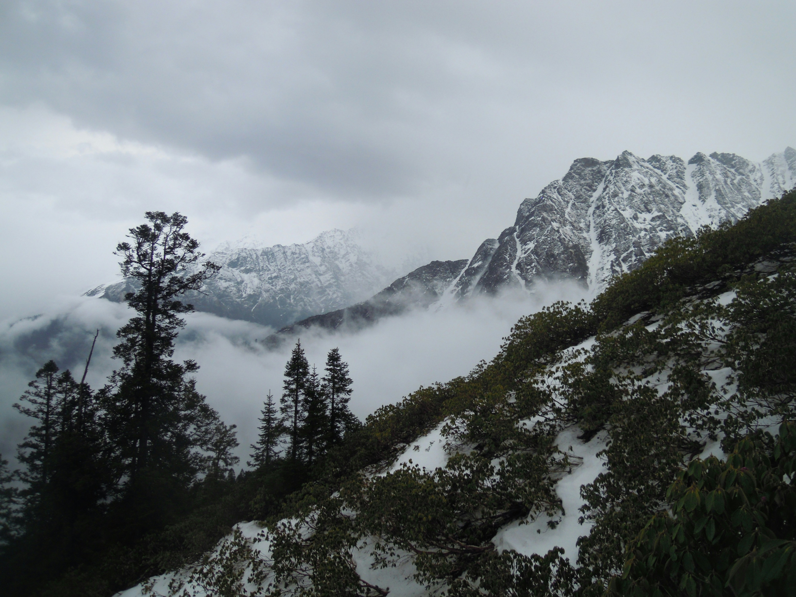

Trek
10 Days
Trek 56 km
Himachal Pradesh
The Sar Pass Trek is a popular high-altitude trek located in the Parvati Valley of Himachal Pradesh, India. Here's an overview:
Location: Parvati Valley, Himachal Pradesh
Duration: Typically 7-8 days
Altitude: Maximum height is around 13,800 feet (4,200 meters)
Difficulty Level: Moderate to difficult, suitable for those with some trekking experience
Best Time to Trek: May to June and September to October
Day 1: Arrival in Kasol; acclimatization and preparation
Day 2: Kasol to Grahan Village (2,500 meters)
Day 3: Grahan to Padri (3,100 meters)
Day 4: Padri to Mung Thach (3,700 meters)
Day 5: Mung Thach to Sar Pass (4,200 meters) and descend to Biskeri Thach (3,600
meters)
Day 6: Biskeri Thach to Barshaini; drive to Manali
Day 7: Manali sightseeing or free day
Day 8: Departure from Manali
Scenic Beauty: Stunning landscapes including lush green meadows, dense forests, and
snow-capped peaks.
Local Culture: Experience traditional Himalayan villages and their culture.
Challenges: Steep ascents, snow crossings, and high altitude.
The Sar Pass Trek offers a rewarding experience for trekkers seeking a mix of adventure and
natural beauty.
Scenic Diversity: The trek covers a range of landscapes, from lush green meadows and dense forests to rocky terrains and snow-covered paths. This diversity provides a rich visual experience and a taste of various Himalayan ecosystems.
Altitude and Views: Sar Pass reaches an altitude of about 13,800 feet (4,200 meters). The high-altitude meadows and snowy peaks offer breathtaking panoramic views of the surrounding mountains, including the Pir Panjal and Dhauladhar ranges.
Cultural Experience: The trek passes through several charming villages like Barshaini and Pulga, where trekkers can experience the local culture and lifestyle of the Himachali people. This adds a cultural dimension to the trek, allowing for interaction with the locals and exploration of traditional Himalayan villages.
Snowy Pass: The highlight of the trek is the Sar Pass itself, a high-altitude snow-covered pass. Crossing the Sar Pass is both challenging and exhilarating, offering a sense of achievement and an unforgettable experience.
Trekking Challenges: The trek is considered moderately difficult, making it suitable for both experienced and enthusiastic beginner trekkers. It involves ascending and descending through varied terrains, which keeps the trek engaging and physically stimulating.
Seasonal Beauty: Depending on the season, the trek offers different experiences. In summer, the meadows are lush and green, while in winter, the pass is covered in a thick blanket of snow, providing a serene and pristine landscape.
Wildlife and Flora: The trek provides opportunities to spot diverse flora and fauna, including high-altitude plants and possibly sightings of Himalayan wildlife such as the Himalayan Monal (the state bird of Himachal Pradesh) and various species of deer.
Overall, the Sar Pass Trek offers a mix of natural beauty, cultural immersion, and physical challenge, making it a memorable adventure for those seeking a diverse trekking experience in the Himalayas
All entry charges as per the itinerary,
Water Sports charges (Parasailing, Jet Ski, Bumper Ride, Speed boat ride,
Banana Ride)
Certified tour leaders / First Aid Responder.
Train ticket from and to. (Depends on the train) Sleeper or 3AC Compartment or 2AC Compartment. The train ticket cost based on the boarding station like Coimbatore, Chennai or Bengaluru.
Note: This is just a tentative itinerary. Timings, sight- seeing & accommodation may change depending on the ground situation / weather condition / transportation / Road Conditions without prior notice.